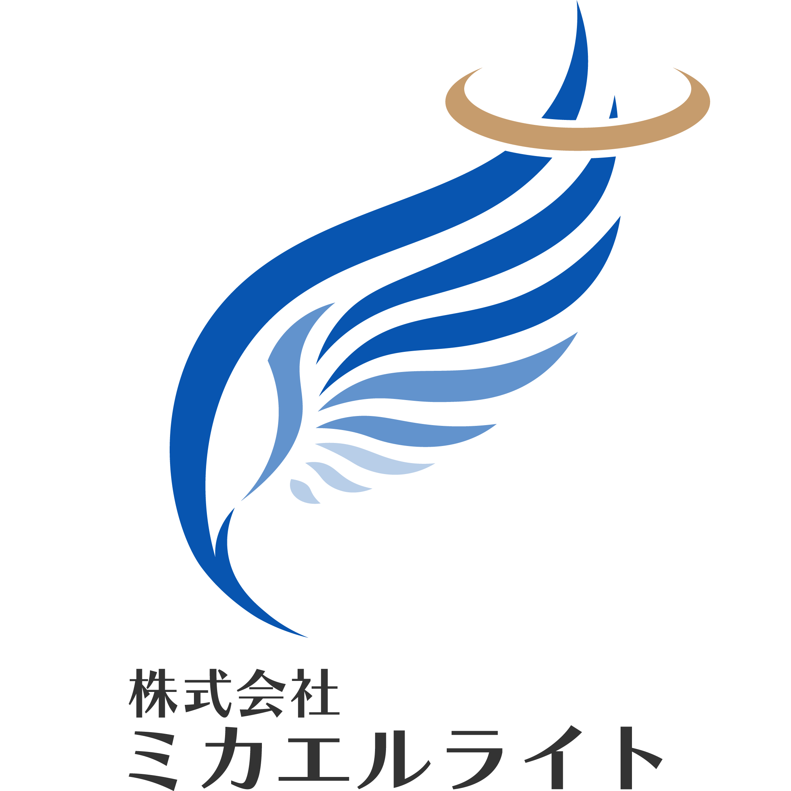

01
COST
大手に頼むと、
コストが膨らむ。
体制は整っているが、要件変更のたびに見積もり交渉。承認フローが多く、小さな改善まで大きな工数になる。
よくある声 ↳
「ちょっと直したいだけなのに、また見積もり…」
「ちょっと直したいだけなのに、また見積もり…」
「もっと使いやすく、もっとデザインの良いものを作りたい」——そう願って依頼したはずなのに、終わってみれば想定の倍のコスト、間延びしたスケジュール、当初のイメージとはほど遠いUI。多くの経営者が、3つの構造的な問題に直面しています。
体制は整っているが、要件変更のたびに見積もり交渉。承認フローが多く、小さな改善まで大きな工数になる。
柔軟でスピードは出るが、属人的でスケジュールが揺らぐ。ドキュメントが残らず、引き継ぎに困ることも多い。
デザインを別会社で作り、実装は別チーム。意図が伝わらず、再現度が落ち、何度も作り直しに。
| 大手SIer | フリーランス | ミカエルライト | |
|---|---|---|---|
| コスト効率 | △ | ○ | ◎ |
| 品質の安定性 | ○ | △ | ◎ |
| スピード・柔軟性 | △ | ○ | ◎ |
| デザインと実装の一体性 | △ | × | ◎ |
| 意思決定の速さ | △ | ○ | ◎ |
デザイナーとエンジニアが分業するのではなく、一体となって動く。デザインの意図を理解したまま実装に落とし込み、実装の制約を踏まえてデザインを磨く。このサイクルがひとつのチームの中で完結します。
金融・自動車・AI・ECなど15業種を横断した豊富な経験
代表が過去マネジメントしてきた、最大80名規模のプロジェクト実績
日本・中国・インド・フランスの4カ国メンバーとプロジェクトを推進してきた経験
フロントエンドのデザイン設計から、バックエンド・インフラの構築まで、ワンストップで対応します。
デザイン性と使い心地を両立した、モダンなWebアプリをゼロから設計・構築。
手触りの良いUIと安定した動作を両立する、iOS・Androidアプリを開発。
現場の業務に寄り添い、運営する人が誇りを持てるシステムを丁寧に。
既存システムの課題を構造から見直し、本来の輝きを引き出す。
要求定義から保守まで、全8ステップ。最後まで伴走します。
やりたいこと・課題をヒアリングし、ゴールを言語化。
実現すべき機能と範囲を整理し、仕様として固める。
画面・データ・システム構成を設計図に落とし込む。
デザインと実装を一体で進め、動くシステムを作る。
品質を多角的に検証し、安心して使える状態へ。
本番環境へ反映し、業務運用へスムーズに乗せる。
リリース後も伴走し、安定稼働を支える。
改善を重ね、システムの価値を育て続ける。

ミカエルライトのシステム開発を率いるのは、大手企業の開発現場で12年
プロジェクトを前に進め続けてきた人間です。
2013年よりシステム開発に従事。大手システムインテグレーターを起点に、PM・PMO・PdMとして、金融・自動車・出版・ゲーム・EC・通信・飲料・商社・アパレル・物流・AI・人材・広告・官公庁・映像制作の15業種を横断。要件定義からリリース・運用までの全工程を経験し、日本・中国・インド・フランスにまたがる体制をマネジメントしてきた。扱ってきたのはシステム開発だけにとどまらず、組織マネジメントや人事、政策調査まで——領域を問わず、「プロジェクトを前に進めること」そのものに向き合ってきた。
大きく始める必要はありません。今いちばん困っているところから、小さく始められます。プロジェクトの規模や要件が固まっていない段階でも、整理するところからお手伝いします。